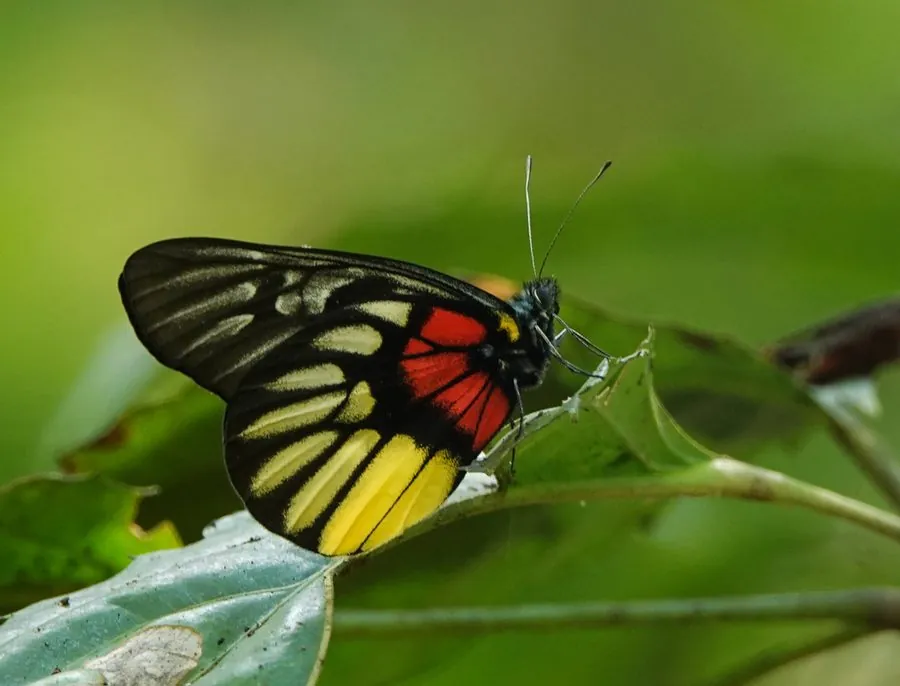

昆虫 · 动物界
红腋斑粉蝶 Delias acalis

翅面黑褐、后翅反面具红黄斑的斑粉蝶，栖息于华南与东南亚的山地林缘，幼虫取食桑寄生科植物，飞行较高。
- 分类
- 门节肢动物门纲昆虫纲目鳞翅目科粉蝶科属斑粉蝶属
- 栖息环境
- 低山至中山的林缘、常绿阔叶林和竹林边缘
- 地理分布
- 中国华南与西南（云南、广西、广东、海南），以及印度、缅甸、泰国、越南、马来西亚
- 保护级别
- 尚无保护级别；为华南较常见的斑粉蝶
物种志
红腋斑粉蝶的翅展约七至八厘米，翅面黑褐色，前翅有几条灰白色条纹，后翅反面在基部与内缘有大片鲜红色与黄色的斑块，停歇时格外醒目，正面则较为暗淡。它的身体细长，胸部黑褐，腹部灰白，触角短而呈棒状。斑粉蝶属的成员多以反面的鲜艳斑纹作为警戒色，红腋斑粉蝶正是其中色彩浓烈的一种。
它分布于中国华南和西南，包括云南、广西、广东和海南，以及印度、缅甸、泰国、越南和马来西亚，栖息在低山至中山的林缘、常绿阔叶林和竹林边缘，成虫飞行较高，常在树冠层活动，喜访花和吸水。幼虫以桑寄生科植物为食，雌蝶将卵产于寄主的叶片或枝条上，幼虫群集取食，化蛹于枝叶间。它一年可发生多代，在华南是较常见的斑粉蝶，目前尚无保护级别。
形态与习性
- 翅展约七至八厘米，翅面黑褐色
- 后翅反面基部和内缘有大片红黄斑块
- 食性幼虫取食桑寄生科植物叶片
- 活动层成虫飞行较高，常在树冠层活动
- 繁殖卵产寄主枝叶上，幼虫群集取食
- 分布华南、西南至东南亚的热带亚热带林区
趣味知识
- 它的后翅反面像涂了一层红黄颜料，正面却暗得几乎认不出来。
- 斑粉蝶属常把鲜艳的反面当作警戒色，提醒鸟类这类蝴蝶并不好吃。
- 幼虫专吃桑寄生，这种植物长在树上，蝶卵也就产在半空的枝叶间。